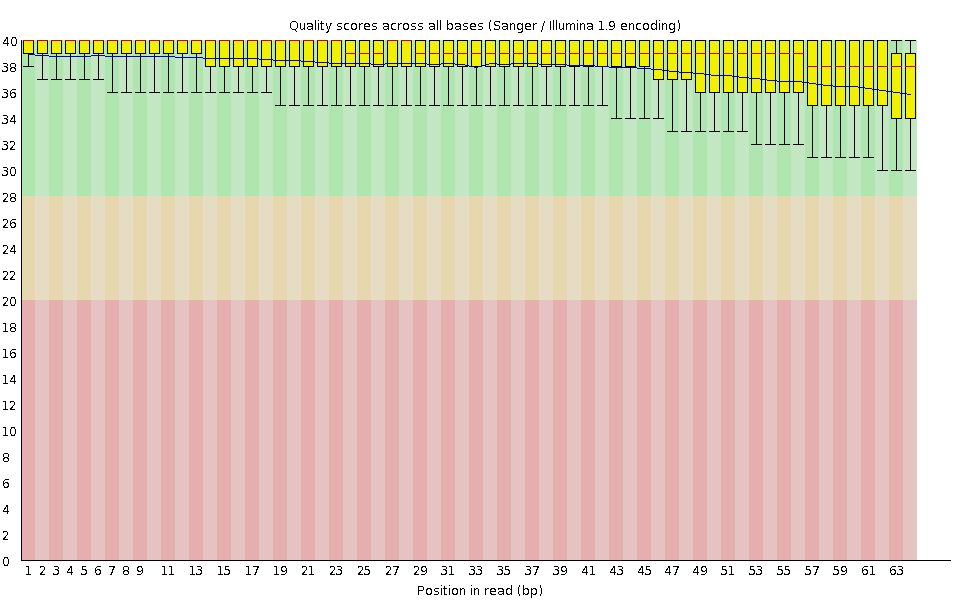
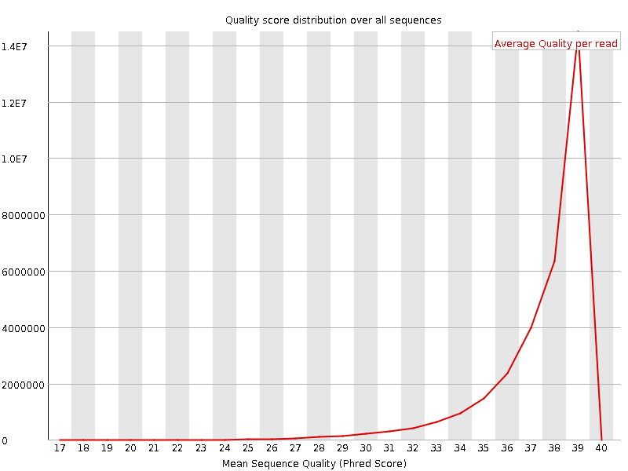
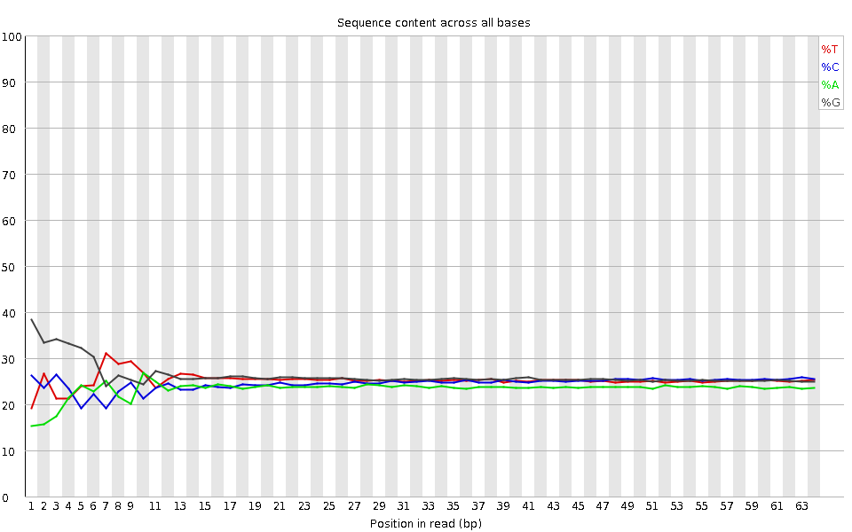
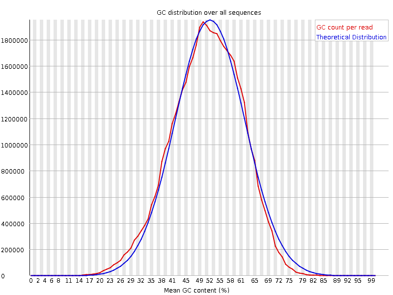
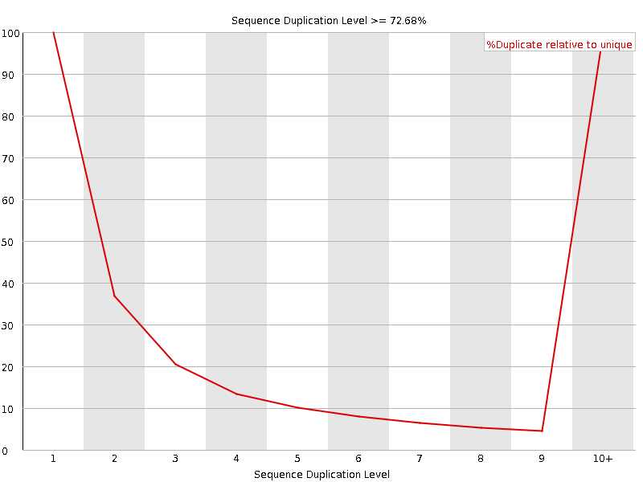
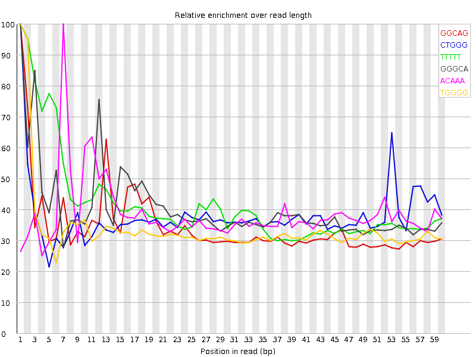

![[OK]](Icons/tick.png) Basic Statistics
Basic Statistics
| Measure | Value |
|---|---|
| Filename | SRR307917_pe_1.f.fastq |
| File type | Conventional base calls |
| Encoding | Sanger / Illumina 1.9 |
| Total Sequences | 31800794 |
| Filtered Sequences | 0 |
| Sequence length | 64 |
| %GC | 51 |
Per base sequence quality

Per sequence quality scores

![[WARN]](Icons/warning.png) Per base sequence content
Per base sequence content

![[FAIL]](Icons/error.png) Per base GC content
Per base GC content

Per sequence GC content

Per base N content

Sequence Length Distribution

Sequence Duplication Levels

Overrepresented sequences
| Sequence | Count | Percentage | Possible Source |
|---|---|---|---|
| GTGTGTACAAAGGGCAGGGACTTAATCAACGCAAGCTTATGACCCGCACTTACTGGGAATTCCT | 66506 | 0.20913314302781244 | No Hit |
Kmer Content

| Sequence | Count | Obs/Exp Overall | Obs/Exp Max | Max Obs/Exp Position |
|---|---|---|---|---|
| GGCAG | 4611980 | 2.2667906 | 6.5551915 | 1 |
| CTGGG | 4829405 | 2.2001047 | 5.805439 | 1 |
| TTTTT | 4285445 | 2.1290512 | 5.1194763 | 1 |
| GGGCA | 4160090 | 2.0446868 | 5.0770044 | 1 |
| ACAAA | 2859615 | 1.9779491 | 5.132224 | 7 |
| TGGGG | 3997715 | 1.7062957 | 5.0492115 | 1 |
| GGGGA | 3368800 | 1.5512867 | 6.0814595 | 1 |
| GGGGG | 3759205 | 1.5447266 | 6.9997077 | 2 |
| GTGGG | 3388920 | 1.4464512 | 6.1895833 | 1 |
| GGGGT | 3246170 | 1.3855232 | 6.2710204 | 3 |
| CGGGG | 2274295 | 0.99749255 | 6.7829905 | 1 |